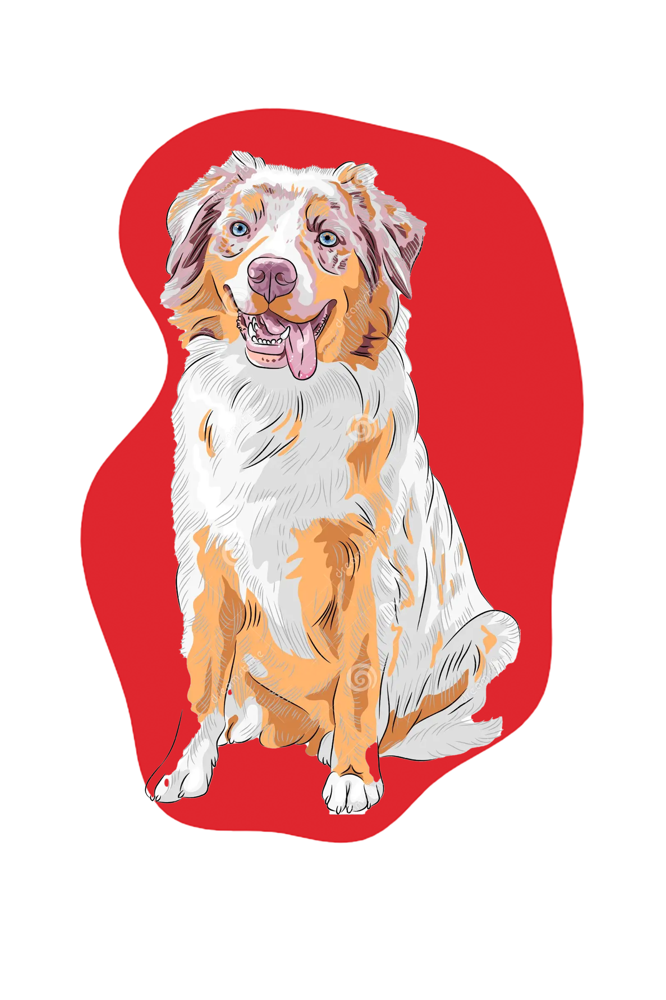
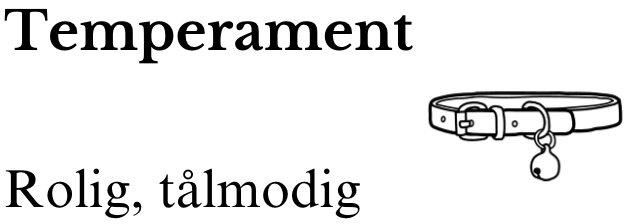
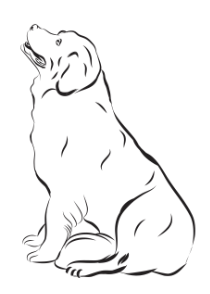
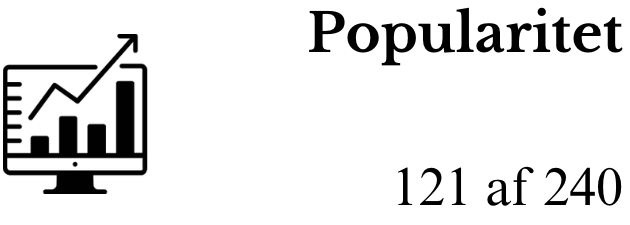

Den Australske Hyrdehund



Race Gruppe
Sporting Hund
Vægt
24 til 36 kilogram


Højde
53 af 60 cm ved skulderen
Levetid
10 til 12 år
Den australske hyrdehund, også kendt som "Aussie", er en energisk og intelligent race, der stammer fra Australien. Disse hunde er kendt for deres arbejdsomhed og alsidighed, og de trives godt med fysisk og mental stimulation. Med deres naturlige instinkt til at arbejde med kvæg og deres lydighed er Aussie'en ikke kun en fremragende arbejdshund, men også en fantastisk følgesvend og familiehund. Deres smukke pels og livlige personlighed gør dem til en populær race over hele verden.